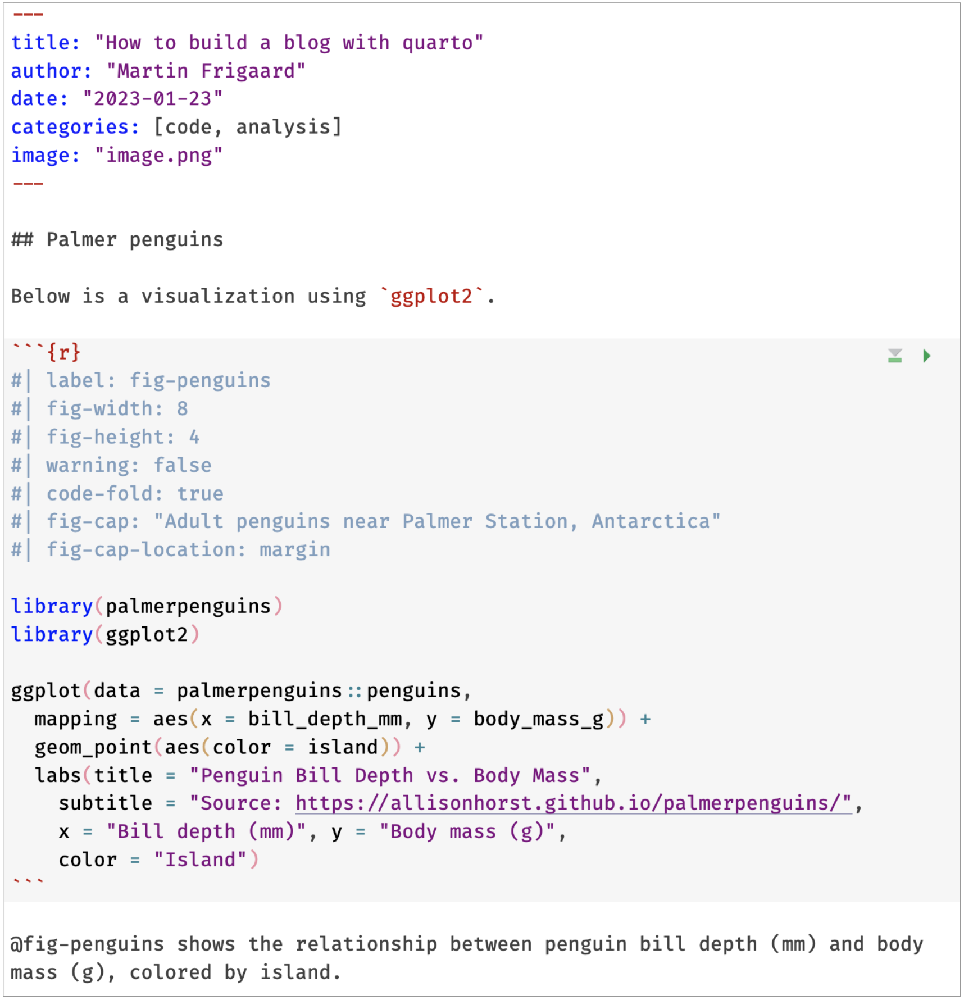
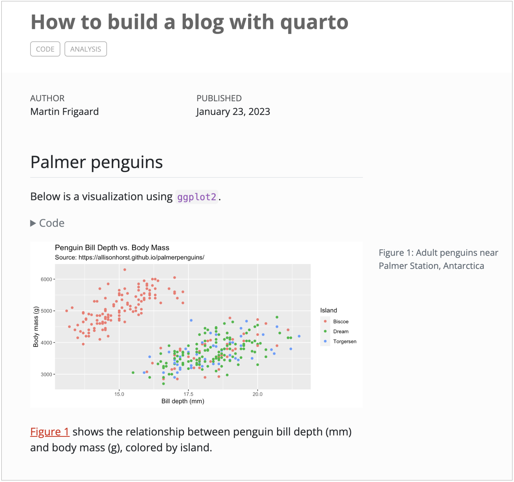
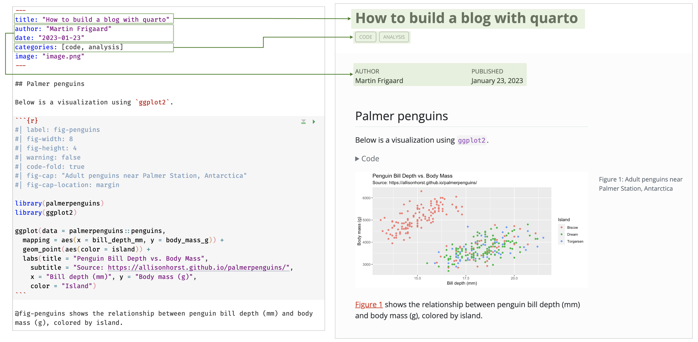
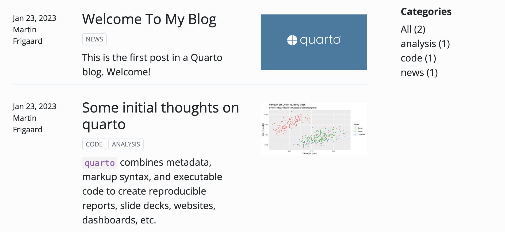
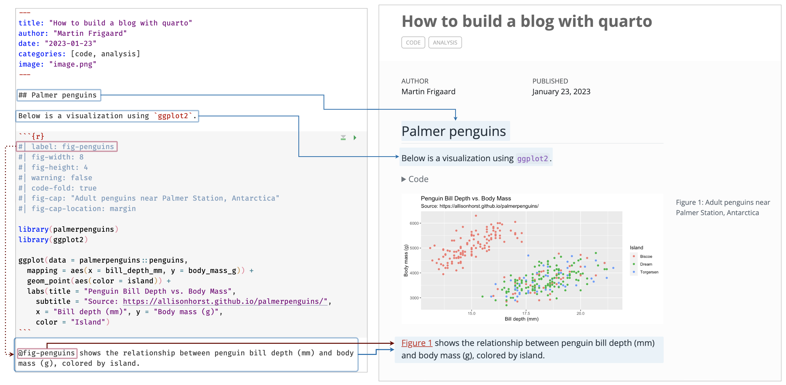
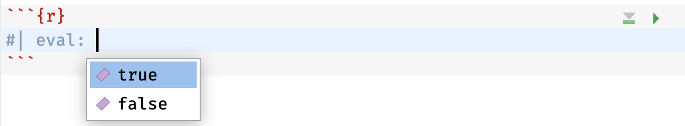
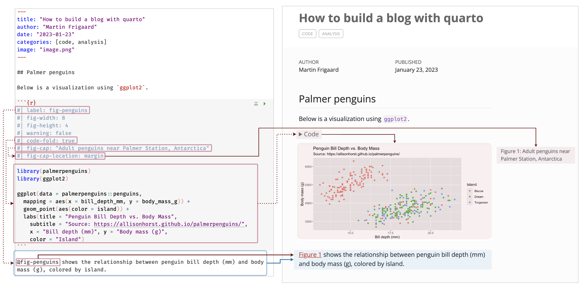
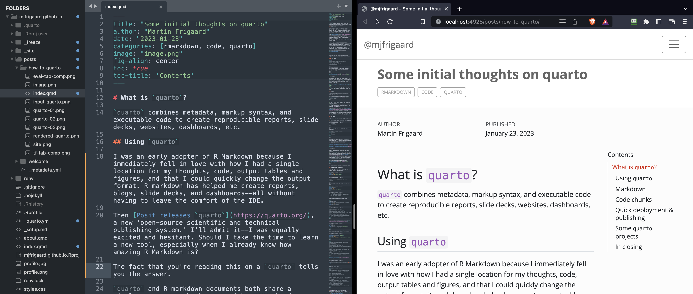

What is quarto?
quarto combines metadata, markup syntax, and executable code to create reproducible reports, slide decks, websites, dashboards, etc.
Using quarto
I was an early adopter of R Markdown because I immediately fell in love with how I had a single location for my thoughts, code, output tables and figures, and that I could quickly change the output format. R markdown has helped me create reports, blogs, slide decks, and dashboards–all without having to leave the comfort of the IDE.
Then Posit releases quarto, a new ‘open-source scientific and technical publishing system,’ and I’ll admit it–I was equally excited and hesitant. Should I take the time to learn a new tool, especially when I already know how amazing R Markdown is?
The fact that you’re reading this on a quarto blog tells you the answer: learning quarto is worth your time.
quarto and R markdown documents both share a similar structure: both start with a YAML header, use markdown formatted text, and include executable code chunks. The output is a wide range of beautifully rendered target documents (which includes .html, .pdf, .docx, and more!)
In this post I’ll cover some of my initial impressions, similarities to R Markdown, and some quarto projects I’ve created.


I’ve described each section below and included figures to connect what is written to the rendered output.
YAML header
YAML is a human friendly data serialization standard for all programming languages, so it’s ideal for storing metadata
title: "How to build a blog with quarto"
author: "Martin Frigaard"
date: "2023-01-23"
categories: [code, analysis]
image: "image.png"
YAML outputBelow is the YAML header used for an example .Qmd blog post. As you can see, many of the same arguments from R Markdown documents are used (title:, author:, date:), and we still provide key: "value" pairs. A few specific keys are included if you’re writing a blog post:

image: rendered on landing pagecategories:creates tags for blog post topics
image:the thumbnail image rendered on the main page
Markdown
The example blog post includes a level 2 header (##), formatted text, and text with a figure reference (below the code chunk).

markdown outputquarto figure cross-referencing:
- The
#| label: <NAME>value is used to build an index for the plot
- In the markdown text, the figure is referenced with
@<NAME>
- In the rendered text, the figure is given a name and number (Figure 1).
quarto’s method for cross-referencing is seamless, and appears to be much easier than the R Markdown method, which takes a few extra steps to setup.
Unlike R Markdown, the tab-completion will also save me from confusing fig-height and fig-width with out-height and out-width (which can take percentages as a character string, like "80%").
Code chunks
quarto chunks have the same components as .Rmd code chunks, but with a slightly different structure:
knitroptions (i.e.,eval=TRUE) are included in the curly brackets of the top fence:
```{r eval=TRUE}
library(rmarkdown)
```In quarto, all options are included in the between the fences.
```{r}
#| eval: true
```You might have noticed the case of TRUE/FALSE have changed, but I’ve found the tab-completion comes to the rescue before I can make a mistake:


Many of the same options exist, with some great additions.
code-fold:it’s nice have this option at each chunk in a single argument (in R Markdown selectively folding/showing code chunks is more involved)
fig-cap:andfig-cap-location:we can place a figure caption (fig-cap:, text string) in one of three locations in the document:top,bottom, ormargin

Code outputWe can also use the label to reference (like we did in Figure 1)
Quick deployment & publishing
Maybe the greatest thing about quarto is that it just works, right out of the box. I love working in the IDE, but I was able to open this document in Sublime Text, run the quarto preview command, and bam:

quarto previewIf you’re publishing a blog using GitHub pages, deployment is also fairly quick. In a Terminal (outside of the IDE). After we’ve added all the files (and included a .nojekyll file), we want to confirm the changes have been committed to the current working branch
touch .nojekyll
git add -A
git commit -m "new .nojekyll"
...
git status
On branch main
Your branch is up to date with 'origin/main'.
nothing to commit, working tree cleanNow we create a gh-pages orphan branch, reset, then commit and push the empty gh-pages branch.
git checkout --orphan gh-pages
Switched to a new branch 'gh-pages'
git reset --hard
git commit --allow-empty -m "Initialising gh-pages branch"[gh-pages (root-commit) 8bd928d] Initialising gh-pages branch
git push origin gh-pages
Enumerating objects: 2, done.
Counting objects: 100% (2/2), done.
Writing objects: 100% (2/2), 181 bytes | 181.00 KiB/s, done.
Total 2 (delta 0), reused 0 (delta 0), pack-reused 0
remote:
remote: Create a pull request for 'gh-pages' on GitHub by visiting:
remote: https://github.com/mjfrigaard/mjfrigaard.github.io/pull/new/gh-pages
remote:
To github.com:mjfrigaard/mjfrigaard.github.io.git
* [new branch] gh-pages -> gh-pagesPublish from Terminal using quarto publish gh-pages
quarto publish gh-pages
? Update site at https://mjfrigaard.github.io/? (Y/n) › Enter y, Yes, or Y
Yes
From github.com:mjfrigaard/mjfrigaard.github.io
* branch gh-pages -> FETCH_HEAD
Rendering for publish:
[1/4] posts/welcome/index.qmd
[2/4] posts/how-to-quarto/index.qmd
[3/4] index.qmd
[4/4] about.qmd
branch 'gh-pages' set up to track 'origin/gh-pages'.
HEAD is now at 4c6a0cd Built site for gh-pages
Preparing worktree (resetting branch 'gh-pages'; was at 4c6a0cd)
[gh-pages 21e966c] Built site for gh-pages
6 files changed, 17 insertions(+), 22 deletions(-)
origin git@github.com:mjfrigaard/mjfrigaard.github.io.git (fetch)
origin git@github.com:mjfrigaard/mjfrigaard.github.io.git (push)
To github.com:mjfrigaard/mjfrigaard.github.io.git
4c6a0cd..21e966c HEAD -> gh-pagesSome quarto projects
- Slides: I use
quartoto create my presentation for ODSC west, and it’s a great comparison a slight variation of the same talk I gave at ODSC east (written in R Markdown) - Book: The
ggplot2graph gallery is also availabe as aquartobook (with slightly more details and graphs)
Each project is managed using a _quarto.yml configuration file (the ODSC west website/slides is listed below):
project:
type: website
output-dir: docs
website:
title: "ODSC-ggplot2-west"
navbar:
left:
- href: index.qmd
text: Home
- href: about.qmd
text: About
right:
- href: slides/slides.qmd
text: Slides
- icon: github
href: https://github.com/mjfrigaard/odsc-west-ggplot2-2022
- icon: twitter
href: https://twitter.com/mjfrigaard
format:
html:
theme:
dark: [cyborg, styles.scss]
light: [minty, styles-dark.scss]
css: styles.css
toc: trueAs you can see, the _quarto.yml defines the type of the project (type:, project:), sets the location of the output files (output-dir:), outlines the sections of the website (title:, navbar:), and sets some of the target document format options (theme:, css:, toc:).
In closing
I’m still learning quarto, so I’m just scrathing the surface of it’s abilities. However, I was able to spin up this website following the documentation in about an hour, so I’m definitely going to stick with it (early wins are important!)